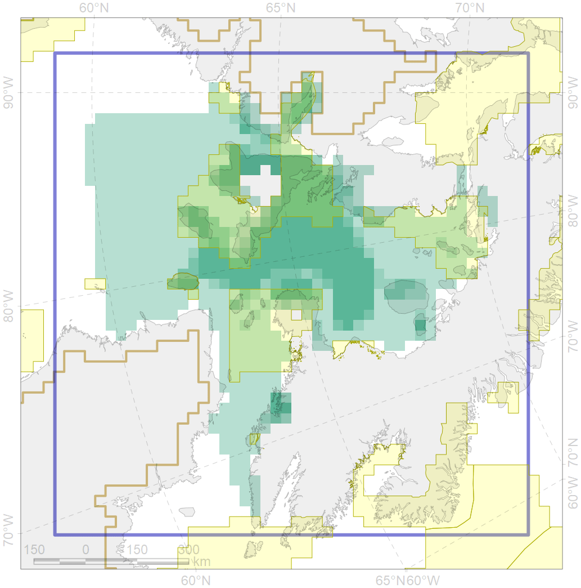
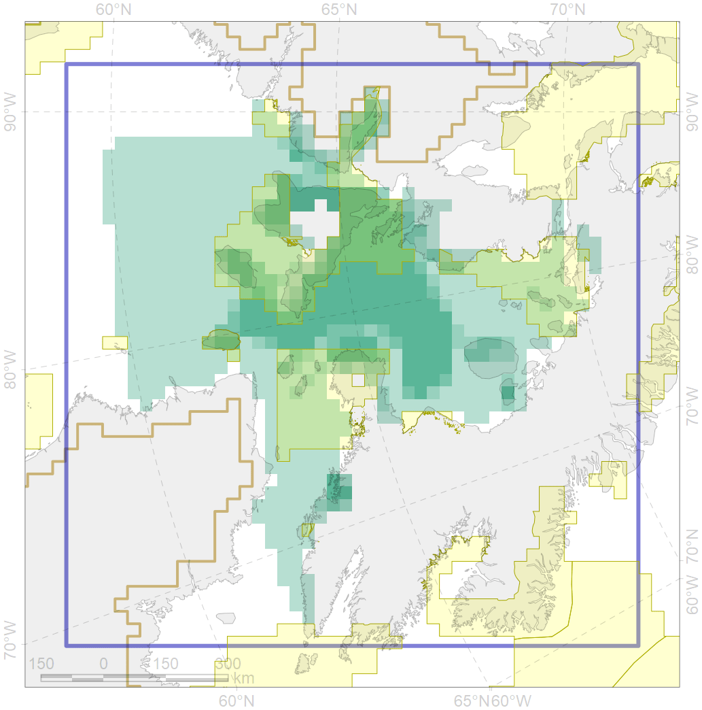

9007
 

| CF ID | 9007 |
| CF Name | polar bear of the FB (Foxe Basin) subpopulation distribution |
| Time Period | 1979-2017 |
| Source(s) | Dyck, 2014 a, b; Boertmann, Mosbech, 2017; Stapleton, 2010; Platonov, 2018 |
| Seasonality | January - December |
| Depth Horizon | 0 |
| Methodology | Field data, expert opinion, simulation results. |
| Author Name | Evgeniya Melikhova, Stanislav Belikov |
| Notes | |
| Conservation Target Set in the Scenario | 0.324 |
| Conservation Target Achieved in the Scenario | 0.403 (Scenario: 124.4%) |
| PAC ID | Proportion in the PAC | Contribution to ArcNet Target Achievement | PAC’s Contribution to the Achieved Target |
|---|---|---|---|
| 66 | 2.0% | 5.2% | 4.2% |
| 67 | 29.9% | 82.8% | 66.6% |
| 68 | 0.1% | 0.2% | 0.2% |
| 72 | 1.7% | 2.3% | 1.8% |
| 73 | 5.0% | 14.9% | 12.0% |
| 75 | 0.1% | 0.2% | 0.2% |
| inner | 38.9% | 105.6% | 84.9% |
| outer | 61.1% | 18.8% | 15.1% |